База знаний крепежа
Справочник по видам крепежа, стандартам и соответствиям ГОСТ / DIN / ISO. Собрано в статическом виде, чтобы быстро находить нужную информацию прямо на сайте.
Категории

poisk.htm
proizvodstvo.html
spasibo.html

spax-samorezy

Анкеры металлические

Болты
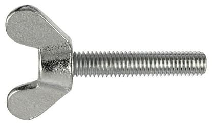
Винты

Гайки
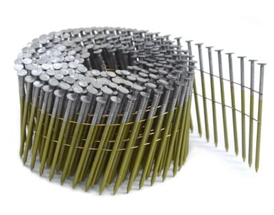
Гвозди, скобы

Дюбели

Дюймовый крепёж
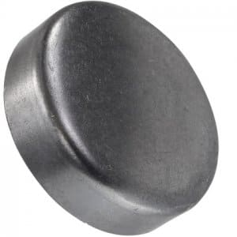
Заглушки

Заклёпки
Заклёпки
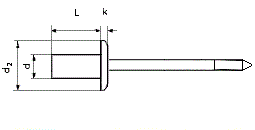
Заклёпки REYHER
Защитная фурнитура

Инструменты
Инструменты

Инструменты WORKPRO
Колёса
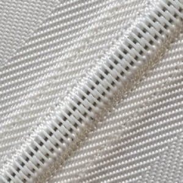
Конвейер
Крепёж для террас

Мебельный крепёж
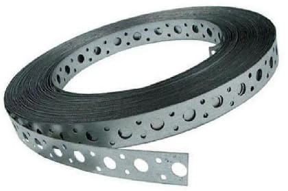
Перфорированный крепёж
Перфорированный крепёж

Пресс-масленки

Промышленная фурнитура
Саморезы
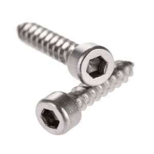
Саморезы, шурупы
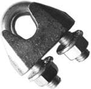
Такелаж
Такелаж
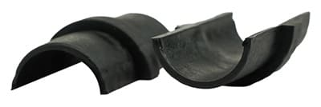
Фурнитура для фургонов
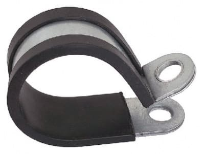
Хомуты
Хомуты

Шайбы
Шайбы
Шпильки

Шпильки резьбовые
Шпонки

Шпонки/крепёж
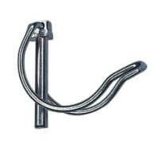
Штифты, шплинты
Штифты, шплинты

Электрооборудование
Результаты поиска
Анкер для высоких нагрузок FISCHER FH II

Анкер для высоких нагрузок HSL-3

Анкер для высоких нагрузок SZ-B
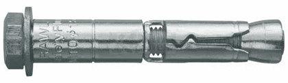
Анкер для высоких нагрузок с болтом R-SPL-II-L
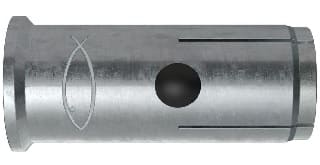
Анкер забивной Fischer EA II
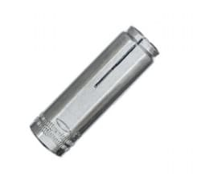
Анкер забивной Fischer EA N

Анкер забивной латунный MSA

Анкер забивной стальной LA

Анкер клиновой B
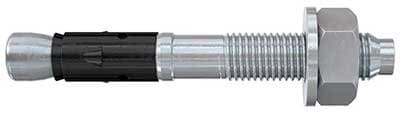
Анкер клиновой Fischer FAZ II
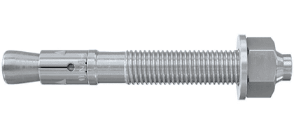
Анкер клиновой Fischer FBN II
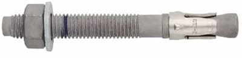
Анкер клиновой HSA-F

Анкер клиновой R-HPTII-ZF

Анкер клиновой R-XPT
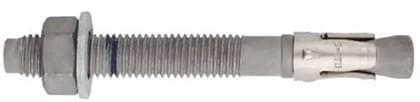
Анкер клиновой R-XPT-HD

Анкер клиновой R-XPT-II-A4 Rawlplug

Анкер клиновой S-KA Sormat
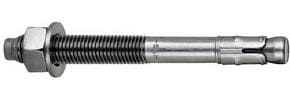
Анкер клиновой S-KAH Sormat

Анкер клиновой UPAT MAX ART 88741

Анкер клиновой WAM
Анкер клиновой А-КА

Анкер клиновой нержавеющий UPAT IMC ART 88764
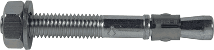
Анкер клиновой распорный BK-А4
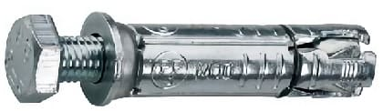
Анкер с болтом PFG LB Sormat

Анкер с кольцом усиленного распирания
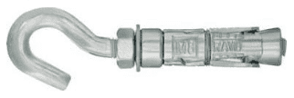
Анкер с крюком Rawlplug

Анкер с подрезкой Hilti HDA-T

Анкер с рым-болтом PFG EBF Sormat

Анкер со шпилькой PFG SB Sormat

Анкер химический HIT-RE 500 V3

Анкер химический ITH 410 Pe Sormat

Анкер химический ITH 585 EPOXe Sormat
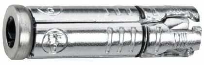
Анкер-гильза PFG ES Sormat
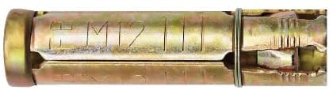
Анкер-гильза распорная 3-х сегментная

Анкер-гильза распорная 4-х сегментная

Анкер-гильза с болтом R-RBL-M
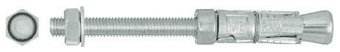
Анкер-гильза со шпилькой R-RBP-M
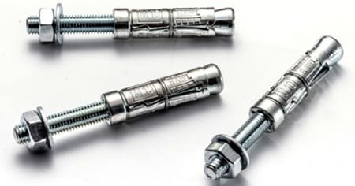
Анкер-гильза со шпилькой и гайкой FPB

Анкер-дюбель Молли для гипсокартона

Анкер-клин
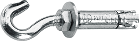
Анкер-крюк PFG HBF Sormat

Анкер-шпилька Hilti HST2

Анкер-шпилька Hilti HST3
Анкер-шпилька Hilti HST3-R
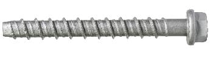
Анкер-шуруп по бетону ZN

Анкерный болт

Анкерный болт двухраспорный
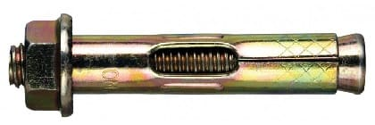
Анкерный болт с гайкой

Анкерный болт с кольцом
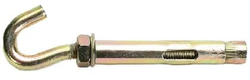
Анкерный болт с крюком
Анкеры химические, массы инжекционные для бетона и кирпича

Химический анкер A-EX

Химический анкер A-VE

Химический анкер Arctic (зимний)
Химический анкер HIMTEX Arctic PROFI 200

Химический анкер HIMTEX EASF

Химический анкер HIMTEX PE-500
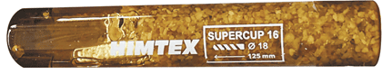
Химический анкер HIMTEX SUPERCUP
Химический анкер HIMTEX VESF PROFI 200
Химический анкер ITH 165 Pe Sormat

Химический анкер ITH 410 Ve Sormat

Химический анкер K-EASF эпокси-акрилат

Химический анкер K-EX
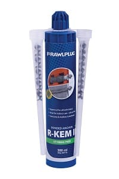
Химический анкер R-KEM-II
Химический анкер R-KEM-II W
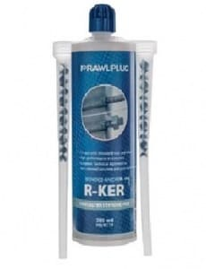
Химический анкер R-KER
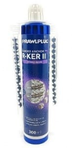
Химический анкер R-KER-II
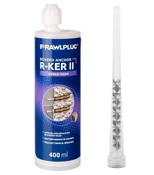
Химический анкер R-KER-II W зимний

Химический анкер R-KEX II

Химический анкер Tecfi ST-EE SWE01
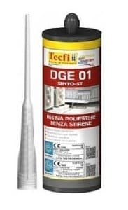
Химический анкер Tecfi ST-PE DGE01 400 мл

Химический анкер Tecfi ST-VE

Химический анкер А-PE 300 ml

Химический анкер А-PE 410 ml
Химический анкер ОКГ PU70
Химический анкер ОКГ ТЕ100

Химический анкер ОКГ ТЕ70
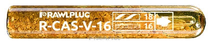
Химический анкер-капсула R-CAS-V

Химический анкер-капсула R-HAC-V

Шуруп по бетону
ART 10105 Болт с фланцем
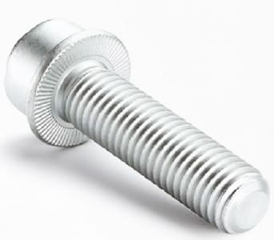
ART 88912 болт с фланцем с насечками

ART 88913 болт шестигранный с фланцем

ART 88928 болт с T-образной головкой для профиля

ART 88933 болт со стопорным буртом
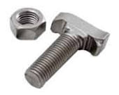
ART 88940 болт Halfen для профиля

ART 88950 болт Halfen для профиля

DIN 15237 болт норийный
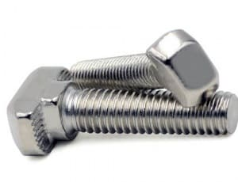
DIN 186 Болт с Т-образной головкой

DIN 22424 болт с трехгранной головкой и буртиком

DIN 261 болт с T-образной головкой для пазов
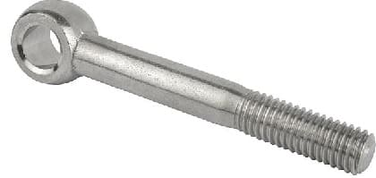
DIN 444 болт откидной
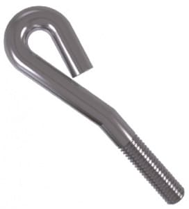
DIN 529 Болты анкерные

DIN 561 Болт установочный с уменьшенной головкой и цапфой

DIN 564 болт установочный с коническим концом

DIN 580 рым-болт
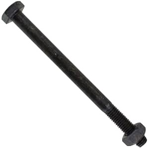
DIN 601 болт с гайкой
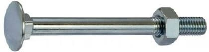
DIN 603 болт мебельный с полукруглой головкой
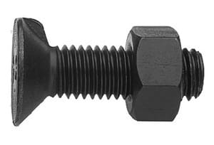
DIN 604 болт с потайной головкой и усом

DIN 605 Болт с потайной головкой и квадратным подголовком

DIN 607 Болт мебельный с усом
DIN 607 и ГОСТ 7801
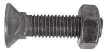
DIN 608 Болт лемешный с потайной головкой
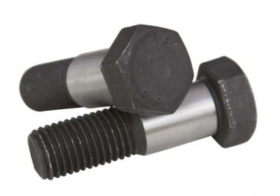
DIN 609 болт призонный

DIN 610 болт призонный

DIN 6914 болт высокопрочный

DIN 6921 Болт с фланцем и насечкой
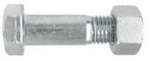
DIN 7968 болт призонный с гайкой
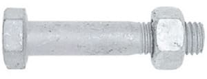
DIN 7990 болт для стальных конструкций
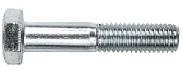
DIN 931 болт шестигранный с неполной резьбой

DIN 933 Болт шестигранный с полной резьбой

DIN 960 Болт с мелкой неполной резьбой
DIN 961 болт с мелкой полной резьбой
DIN 962 болты с отверстием
EN 14399-8 болт высокопрочный

ISO 4014 болт с шестигранной головкой
ISO 4017 болт с шестигранной головкой
Болты DIN 608 и ГОСТ 7786

ГОСТ 24379.1-2012 Болты фундаментные

ГОСТ 3033-79 болты откидные
ГОСТ 7786-81 Болт лемешный

ГОСТ 7796-70 болт с шестигранной уменьшенной головкой

ГОСТ 7798-70 Болт с шестигранной головкой
ГОСТ 7805-70 Болт с шестигранной головкой

ГОСТ Р 52644-2006 болт высокопрочный

ГОСТ Р ИСО 4014-2013 болт с шестигранной головкой
Отличия болтов DIN 931 и DIN 933
Сравнение стандартов на болты DIN 603 и ГОСТ 7802-81
DIN 3016 Хомут с резиновым профилем

DIN 3017-1 Хомут червячный

DIN 3567 Хомут трубный

DIN 3570 Скоба U-образная
Дюбель-хомут для круглого кабеля 5-10 мм

Зажим для крепления кабеля KP

Замок хомутной ленты VERS

Кронштейн Z-образный с виброгасителем
Мини-хомут MIKALOR
Скоба U-образная W1 VERS
Скоба П-образная

Скоба вентиляционная

Скоба двухлапковая металлическая
Скоба для профиля SB 38/40

Скоба металлическая однолапковая

Стяжка кабельная нейлоновая KCC

Стяжка кабельная нейлоновая белая JSS
Стяжка кабельная нейлоновая белая KELTOS
Стяжка кабельная нейлоновая чёрная KCC
Стяжка кабельная нейлоновая чёрная KELTOS
Стяжка кабельная стальная нержавеющая

Стяжка многоразовая
Хомут Р-образный Рубер нержавеющий
Хомут вентиляционный с резиновым уплотнителем

Хомут для крепления труб KOPI PK
Хомут заземления для труб
Хомут нержавеющий трубный KOPI RST PK
Хомут одновинтовой для труб
Хомут оцинкованный KOPI PK
Хомут проволочный MIKALOR AAL
Хомут проволочный с винтом VERS W1

Хомут пружинный NORMA FBS
Хомут силовой двухболтовый W1

Хомут трубный MAYER
Хомут трубный VERS
Хомут трубный W2
Хомут трубный W4
Хомут трубный с гайкой W1
Хомут трубный с гайкой и уплотнителем C-PIDIN

Хомут трубный усиленный VERS W4
Хомут усиленный NORMA GBS W1
Хомут усиленный NORMA GBS W2
Хомут усиленный VERS W2

Хомут усиленный двухболтовый VERS W1

Хомут усиленный для труб
Хомут усиленный одноболтовый VERS W1

Хомут червячный NORMA W1
Хомут червячный NORMA W2
Хомут червячный NORMA W5
Хомут червячный VERS W1
Хомут червячный VERS W4
Хомут червячный W1 Китай
Хомут червячный W2 Китай
Хомут червячный W4 Китай

Хомут червячный нержавеющий VERS W2

Хомут червячный с ключом

Хомут червячный с ключом VERS
Хомут червячный усиленный
Лента перфорированная монтажная KVA

Лента перфорированная монтажная PVA
Лента тарная

Опора бруса закрытая
Опора бруса открытая
Пластина перфорированная крепёжная

Уголок перфорированный крепёжный
Уголок усиленный крепёжный
Дюбель DuoBlade для гипсокартона
Дюбель EXPANDET SUPER

Дюбель FISCHER DUOPOWER S с шурупом

Дюбель FISCHER DUOPOWER универсальный

Дюбель Fischer SX PLUS

Дюбель Fischer SXRL FUS с шурупом
Дюбель ML для пустотелого кирпича
Дюбель MUD металлический для газобетона
Дюбель ZUM универсальный
Дюбель ЧАПАЙ распорный

Дюбель для газобетона KBT
Дюбель для гипсокартона DRIVA металл
Дюбель для гипсокартона DRIVA металл с шурупом

Дюбель для гипсокартона DRIVA нейлон
Дюбель для теплоизоляции с металлическим гвоздем
Дюбель для теплоизоляции с пластиковым гвоздем
Дюбель для теплоизоляции с термоголовкой
Дюбель кровельный

Дюбель монтажный
Дюбель нейлоновый
Дюбель нейлоновый NAT

Дюбель нейлоновый PND
Дюбель полипропилен

Дюбель пружинный складной с крюком
Дюбель рамный металлический

Дюбель рамный с шурупом потай

Дюбель рамный с шурупом потай KAT N

Дюбель с крюком
Дюбель фасадный HEX
Дюбель фасадный S-UP с шурупом
Дюбель фасадный с шурупом KAT N

Дюбель фасадный с шурупом S-UF

Дюбель-бабочка для гипсокартона
Дюбель-гвоздь c потайной манжетой LYT UK KP

Дюбель-гвоздь металлический
Дюбель-гвоздь с потайной манжетой
Дюбель-гвоздь с потайной манжетой и усами
Дюбель-гвоздь с цилиндрической манжетой

Дюбель-костыль
Дюбель-крюк

Набор для крепления унитаза
Ограничитель для двери
Адаптер одиночный для скрытого монтажа

Вилка силовая 32А 380В IP44
Выключатель Legrand Plexo серый IP55

Механизм розетки компьютерной RJ45
Механизм розетки с заземлением 16А
Накладка для розетки RJ45
Переключатель одноклавишный скрытый
Рамка 1 пост Legrand Plexo IP55

Рамка 1-местная
Рамка с крышкой для розетки IP55

Рамка скрытого монтажа

Розетка Legrand Plexo IP55
Розетка силовая 32А 380В IP44
Электрооборудование
DIN 6885 шпонка призматическая

DIN 6887 Шпонка клиновая врезная
DIN 6888 шпонка сегментная
ГОСТ 8787-68 / DIN 6880 Шпоночная сталь
Услуги по порошковой покраске крепежа
Услуги по цинкованию крепежа
Втулка опоры трубы
Замок-защёлка PUSH

Кронштейн рукоятки прутковой
Опора трубы крайняя

Опора трубы промежуточная
Петля двери фургона 252
Петля двери фургона 298

Петля приварная каплевидная с подшипником
Площадка PUSH
Рукоятка PUSH 2
Рукоятка Дельта

Рукоятка прутковая
Ручка PUSH

Фиксатор двери Т-образный

Фиксатор двери подрамный

Фиксатор прутковой ручки
Фиксатор рукоятки Дельта
Гвозди барабанные BeARUS BDC
Гвоздь винтовой оцинкованный
Гвоздь ершёный (рифленый)
Гвоздь строительный
Гвоздь толевый

Гвоздь финишный

Скоба строительная

Скобы для степлера 53
DIN 431 Гайка трубная дюймовая

DIN 912 дюймовые винты UNC с внутренним шестигранником
Гайка дюймовая ASME B 18.2.2

Дюймовые болты
Таблица размеров дюймовых резьб в мм
DIN 850 Фреза для пазов
DIN 911 Ключ шестигранный

Абразивный инструмент

Аксессуары для химических анкеров
Бита PH-2 50 мм ПРОФИ

Бита PH-3 50 мм БИБЕР
Бита SPAX 1/4 Tx 88654
Бита TORX ПРОФИ
Бита TORX ТРИГГЕР
Бита TORX длинная Hans

Бита антивандальная 1/4 PIN-HEX 88666
Бита антивандальная 1/4 PIN-HEX 9119

Бита антивандальная Torx 1/4 Tх 88667

Бита антивандальная под два отверстия SP 1/4 88665
Бита кровельная

Бур SDS-max по бетону S4 Quatro VERTO

Бур SDS-plus Biber
Бур по бетону SDS-max S4 Quatro GRAPHITE

Бур по бетону SDS-plus Sormat

Гвоздодёр усиленный Ермак 600x29x15
Диск алмазный Сегмент Новый Cutop
Диск алмазный турбо Cutop

Диск зачистной по металлу Cutop

Диск отрезной Cutop Profi

Диск шлифовальный Велкро (Velcro)
Диск шлифовальный ДО 350×40

Диск шлифовальный лепестковый Cutop
Диск шлифовальный самозакрепляющийся ИС

Заклепочник для резьбовых заклепок двуручный SC-784 (M5-M10)
Заклепочник ручной вытяжной SC-GS701

Заклепочник усиленный ручной BIBER 255 мм

Заклепочники ручные механические
Инструмент для установки резьбовых вставок ENSAT
Инструменты

Клещи переставные 250 мм БИБЕР
Клещи, пассатижи, гвоздодёры
Ключ радиусный шарнирный

Ключ шестигранный г-образный ISO 2936
Ключи шестигранные, биты для шуруповерта

Кольцо для ключей

Круг зачистной лепестковый
Круг лепестковый торцевой

Круг отрезной 41
Круг шлифовальный прямого профиля
Круг шлифовальный чашечный

Лента для ограждения
Лента шлифовальная бесконечная ЛБ1
Лом-гвоздодер усиленный Gigant GNP-450
Мешок полипропиленовый белый

Набор торцевых головок

Наборы инструментов, ключей

Отвертки
Очки защитные открытые прозрачные Титан

Перчатки х/б с ПВХ 10 класс
Перчатки х/б с ПВХ 10 класс 5 нитей
Перчатки х/б с латексным покрытием
Пистолет для двухкомпонентного химического анкера TECH-KREP PRO

Пистолет для инжекционной массы IPU 380/410
Пистолет для картриджа 400 мл
Пистолет для картриджа R-GUN 300-N 175-300 мл

Пистолет для картриджа R-GUN 380-P 380-410 мл
Пистолет для химического анкера 380-600 мл R-GUN-MULTI

Пистолет для химического анкера IPU 165/300
Пистолет для химического анкера IPU 385/585

Пистолет для химического анкера OKG
Сверло HSSCo5 Кобальт ЦХ
Сверло ЦХ

Сверло по дереву перовое Бибер

Сверло по металлу Cutop

Сверло по металлу HSS Бибер

Сверло по металлу Р6М5 TIN ЦХ ONYX
Сверло по металлу Р6М5 Триггер
Сверло по металлу Р6М5К5 КОБАЛЬТ ЦХ ТРИГГЕР
Сверло ступенчатое по металлу ТРИГГЕР
Свёрла, буры, фрезы

Сетчатая гильза для химического анкера
Смеситель для химического анкера

Средства индивидуальной защиты

ТУНДРА Адаптер для бит
Щипцы для сборки трубок СОЖ

Щётка для чистки отверстий
Замок Selflex FR70x10
Замок болтовой Selflex BR
Замок проволочный Selflex SR из плоской проволоки
Замок проволочный Selflex TR из круглой проволоки
Замок шарнирный Selflex MR
Комплектующие для конвейеров
DIN 1624 Гайка врезная мебельная

DIN 7965 Муфта мебельная

DIN 967 винт мебельный с прессшайбой
Винт мебельный с плоской головкой

Винт с полукруглой головкой NF E 27-128 АРТ 9056
Винт-конфирмат мебельный

Гайка Эриксона мебельная

Гайка-бочонок мебельная

Гайка-втулка мебельная
Евровинт мебельный
Стяжка межсекционная
Шуруп мебельный
ART 88105 гайка самостопорящаяся омедненная THERMAG

DIN 1479 Гайка-муфта

DIN 1587 Гайка колпачковая
DIN 1804 Гайка шлицевая

DIN 2510 Гайка для фланцевых соединений

DIN 315 Гайка-барашек с округлыми лепестками

DIN 315 Гайка-барашек с прямоугольными лепестками
DIN 431 Гайка трубная
DIN 439 / ISO 4035 Гайка низкая шестигранная

DIN 439 LH Гайка низкая с левой резьбой

DIN 439-2 / ISO 8675 Гайка низкая с мелкой резьбой
DIN 466 Гайка с накаткой круглая высокая

DIN 467 Гайка с накаткой низкая круглая

DIN 508 Гайка для Т-образных пазов

DIN 546 Гайка шлицевая круглая

DIN 555 Гайка шестигранная
DIN 557 Гайка квадратная с фаской

DIN 562 Гайка квадратная низкая

DIN 582 рым-гайка

DIN 6303 Гайка с накаткой

DIN 6307 Гайка зажимная воротковая
DIN 6330 Гайка высокая

DIN 6331 Гайка с фланцем

DIN 6334 Гайка соединительная
DIN 6335 ручка крестообразная

DIN 6915 Гайка высокопрочная

DIN 6923 Гайка с фланцем

DIN 6923 Гайка с фланцем с насечкой

DIN 6924 Гайка самоконтрящаяся
DIN 6925 Гайка самоконтрящаяся

DIN 6926 Гайка самоконтрящаяся с фланцем

DIN 6927 Гайка самоконтрящаяся с фланцем

DIN 70852 Гайка шлицевая
DIN 74361 Гайка с плоским фланцем

DIN 7967 Гайка стопорная

DIN 80704 гайка-барашек

DIN 80705 гайка плоская
DIN 917 Гайка колпачковая

DIN 928 Гайка приварная квадратная

DIN 929 Гайка приварная шестигранная

DIN 934 LH гайка с левой резьбой
DIN 934 Гайка с мелким шагом резьбы
DIN 934 Гайка шестигранная с крупной резьбой

DIN 935 Гайка корончатая

DIN 936 Гайка низкая шестигранная
DIN 937 Гайка корончатая низкая

DIN 979 Гайка корончатая низкая

DIN 980 Гайка самоконтрящаяся цельнометаллическая

DIN 981 Гайка шлицевая

DIN 982 Гайка самоконтрящаяся высокая

DIN 985 Гайка самоконтрящаяся низкая

DIN 986 Гайка колпачковая самоконтрящаяся
ISO 10511 Гайка самоконтрящаяся низкая
ISO 10512 Гайка самоконтрящаяся
ISO 4032 Гайка шестигранная

ISO 4033 Гайка высокопрочная

ISO 7042 Гайка самостопорящаяся
ISO 8673 Гайка с мелкой резьбой

ISO 8675 Гайка низкая

Втулка круглая ART 88088
Втулка приварная резьбовая

ГОСТ 11871-88 Гайка шлицевая круглая

ГОСТ 3032-76 Гайка-барашек

ГОСТ 5915-70 гайка шестигранная

ГОСТ 5918-73 Гайка корончатая

ГОСТ 5927-70 гайка шестигранная
ГОСТ 9064-75 Гайка для фланцевых соединений
ГОСТ ИСО 4032-2014 Гайка шестигранная

ГОСТ Р 52645-2006 Гайка высокопрочная

Гайка Bilok ART 84032

Гайка антивандальная отрывная ART 88118

Гайка запрессовочная ART 88106

Гайка запрессовочная круглая
Гайка запрессовочная шестигранная
Гайка кузовная закладная

Гайка с трапецеидальной резьбой ART 88089

Гайка с трапецеидальной резьбой ART 88090

Гайка с фланцем ART 13023

Гайка с фланцем и рифлением ART 88914
Гайка соединительная ART 88087
Гайка стопорная с буртом ART 88934
Гайка шлицевая ART 88081
Гайки с фланцем DIN 6923 и ГОСТ Р 50592-93
Сравнение стандартов на гайки DIN 982 и DIN 985
Сравнение стандартов на гайки шестигранные DIN 934 и ГОСТ 5927-70
DIN 2510 Шпилька для фланцев
DIN 835 Шпилька резьбовая

DIN 938 Шпилька резьбовая
DIN 939 Шпилька резьбовая

DIN 975 Шпилька с трапецеидальной резьбой
DIN 975 шпилька резьбовая
DIN 976-1 шпилька резьбовая

ГОСТ 22032-76 Шпилька
ГОСТ 22035-76 Шпилька

ГОСТ 22042-76 Шпилька
ГОСТ 9066-75 Шпилька
Резка шпилек и шпоночной стали в размер
Стойка монтажная
Шпилька для химического анкера
Шпилька запрессовочная

Шпилька приварная
Шпилька сантехническая
Поиск на сайте ТДМ Нева
DIN 3404 пресс-масленка

DIN 71412 пресс-масленка прямая (тип A)
DIN 71412 пресс-масленка угловая 45° (тип B)
DIN 71412 пресс-масленка угловая 90° (тип C)

ГОСТ 19853-74 пресс-масленка под запрессовку
ГОСТ 19853-74 пресс-масленка прямая

ГОСТ 19853-74 пресс-масленка угловая
Изготовление металлических изделий по чертежам
DIN 15058 Опора оси

DIN 319 Ручка шаровая

DIN 6336 Ручка звёздообразная

DIN 71752 Шарнир вилочный
DIN 71802 Шарнир шаровый угловой

DIN 8140 Вставка резьбовая пружинная
DIN 99 Ручка коническая зажимная

Вставка резьбовая Ensat ART 88302
Вставка резьбовая Ensat ART 88307
Втулка изоляционная KORREX
Втулка ограничительная
Фиксатор LINDAPTER F9

Шарнир угловой ES ART 88752
DIN 660 Заклёпки с полукруглой головкой
DIN 661 Заклёпка с потайной головкой

DIN 662 Заклёпка с полупотайной головкой
DIN 674 Заклёпка под молоток с низкой полукруглой головкой
DIN 7337 Заклёпка вытяжная

DIN 7338 Заклёпка пустотелая

Втулка запрессовочная резьбовая

Заклепка гайка гладкая удлиненная МФ
Заклёпка вытяжная DA алюминий/сталь стандартный бортик

Заклёпка вытяжная алюминиевая DA AL-AL с потайным бортиком

Заклёпка вытяжная алюминиевая DA AL-AL с широким бортиком
Заклёпка вытяжная алюминиевая DA AL-AL стандартный бортик

Заклёпка вытяжная глухая закрытая ACB ST-ST

Заклёпка вытяжная глухая комбинированная DA AL-ST
Заклёпка вытяжная глухая нержавеющая SS A2-A2
Заклёпка вытяжная глухая с потайным бортиком DA AL-ST

Заклёпка вытяжная комбинированная DA AL-A2 с широким бортиком

Заклёпка вытяжная комбинированная DA AL-ST с широким бортиком
Заклёпка вытяжная лепестковая DA AL-ST
Заклёпка вытяжная медная со стандартным бортиком DA CU-ST
Заклёпка вытяжная нержавеющая SS A2-A2 с потайным бортиком

Заклёпка вытяжная нержавеющая SS А2-А2 с широким бортиком

Заклёпка вытяжная рифлёная AL-ST

Заклёпка вытяжная с потайным бортиком DA AL-ST
Заклёпка вытяжная со стандартным бортиком DA AL-A2

Заклёпка вытяжная со стандартным бортиком ISO 16584 Monel-A4

Заклёпка вытяжная сталь-сталь ACB ST-ST с потайным бортиком
Заклёпка вытяжная стальная ACB ST-ST стандартный бортик

Заклёпка вытяжная стальная с широким бортиком ACB ST-ST
Заклёпка вытяжная стандартный бортик SS А2-А2
Заклёпка вытяжная усиленная моноболт St-St

Заклёпка-гайка гладкая с малым фланцем
Заклёпка-гайка гладкая с потайным фланцем 88418
Заклёпка-гайка гладкая с цилиндрическим фланцем ЦФ

Заклёпка-гайка гладкая удлинённая ПФ
Заклёпка-гайка гладкая удлинённая с цилиндрическим фланцем ЦФ
Заклёпка-гайка глухая гладкая с цилиндрическим фланцем ЦФ
Заклёпка-гайка лепестковая
Заклёпка-гайка полушестигранная МФ
Заклёпка-гайка полушестигранная с цилиндрическим фланцем ЦФ
Заклёпка-гайка рифленая МФ
Заклёпка-гайка рифленая глухая с цилиндрическим фланцем ЦФ
Заклёпка-гайка рифленая с потайным фланцем ПФ

Заклёпка-гайка рифленая с цилиндрическим фланцем ЦФ

Заклёпка-гайка рифленая удлинённая МФ

Заклёпка-гайка рифленая удлинённая с потайным фланцем ПФ

Заклёпка-гайка рифленая удлинённая с цилиндрическим фланцем ЦФ

Заклёпка-гайка цилиндрическая ПФ

Заклёпка-гайка шестигранная МФ

Заклёпка-гайка шестигранная с цилиндрическим фланцем ЦФ
Заклёпка-гайка шестигранная удлинённая МФ
Заклёпки вытяжные
Заклёпки вытяжные RAL DA

Заклёпки под молоток DIN

Резьбовые заклёпки-гайки
Заклёпка вытяжная герметичная закрытая REYHER

Заклёпка вытяжная распорная со стандартным бортиком
Заклёпка вытяжная с потайным бортиком
Заклёпка вытяжная с широким бортиком
Заклёпка вытяжная со стандартным бортиком
Заклёпка лепестковая вытяжная REYHER

Заклёпка многозажимная вытяжная Multigrip с широким бортиком
Заклёпка многозажимная вытяжная Multigrip со стандартным бортиком
Заклёпка пластиковая вытяжная REYHER
Заклёпка прочная вытяжная со стандартным бортиком
Заклёпка прочная потайная вытяжная

Заклёпка рифлёная вытяжная со стандартным бортиком
Заклёпки вытяжные REYHER
DIN 316 винт барашковый
DIN 316 винт-барашек с прямоугольными лепестками
DIN 404 винт пломбировочный с отверстиями

DIN 417 Винт установочный с цилиндрическим концом

DIN 427 Винт установочный (штифт резьбовой)
DIN 438 Винт установочный с засверленным концом

DIN 464 Винт с накатанной головкой
DIN 478 винт установочный с квадратной головкой и подголовником

DIN 479 Винт установочный с квадратной головкой

DIN 480 Винт с квадратной головкой и закруглённым концом
DIN 551 Винт установочный с плоским концом
DIN 553 Винт установочный с коническим концом и прямым шлицем

DIN 6311 Подушка упорная
DIN 6332 винт установочный с упорной цапфой и внутренним шестигранником
DIN 653 Винт прижимной низкий с накаткой
DIN 6912 винт с низкой цилиндрической головкой и внутренним шестигранником

DIN 7500 C винт резьбовыдавливающий Taptite с цилиндрической головкой со сферой

DIN 7500 D винт резьбовыдавливающий Taptite с шестигранной головкой с фланцем

DIN 7500 M винт резьбовыдавливающий Taptite с потайной головкой

DIN 7500 Винты резьбовыдавливающие Taptite - формы
DIN 7500 Е резьбовыдавливающий винт Taptite с цилиндрической головкой и внутренним шестигранником
DIN 7513 A винт самонарезающий с шестигранной головкой

DIN 7513 B винт самонарезающий с цилиндрической головкой
DIN 7516 D винт самонарезающий с потайной головкой
DIN 7516 E винт самонарезающий с полупотайной головкой
DIN 7516 А винт самонарезающий с полукруглой головкой

DIN 7643 винт полый

DIN 787 винт пазовый станочный для Т-образных пазов
DIN 7964 винт невыпадающий с шестигранной головкой
DIN 7969 MU винт с потайной головкой и гайкой
DIN 7984 Винт с низкой головкой с внутренним шестигранником или шлицем Torx

DIN 7985 Винт с цилиндрической головкой со шлицем Torx

DIN 7985 винт с цилиндрической головкой с полусферой и крестообразным шлицем

DIN 7985 и ГОСТ 17473-80 сравнение стандартов на винты

DIN 7991 (ISO 10642) винт с потайной головкой и внутренним шестигранником
DIN 84 винт с цилиндрической головкой и прямым шлицем (ISO 1207)
DIN 85 Винт с цилиндрической скруглённой головкой и прямым шлицем

DIN 912 винт с цилиндрической головкой и внутренним шестигранником

DIN 912 винт с цилиндрической головкой и внутренним шестигранником, мелкая резьба

DIN 913 Винт установочный с внутренним шестигранником и плоским концом

DIN 914 винт установочный с внутренним шестигранником и коническим концом
DIN 915 (ISO 4028) винт установочный с внутренним шестигранником и цапфой
DIN 916 Винт установочный с внутренним шестигранником и засверленным концом

DIN 920 Винт с уменьшенной цилиндрической головкой и прямым шлицем

DIN 921 Винт с увеличенной плоской головкой и прямым шлицем

DIN 923 Винт ступенчатый с плоской головкой и прямым шлицем
DIN 927 винт с цилиндрической цапфой и прямым шлицем
DIN 963 винт с потайной головкой

DIN 964 винт с полупотайной головкой и прямым шлицем
DIN 965 Винт с потайной головкой

DIN 965 винт с потайной головкой и шлицем Torx
DIN 965 и ГОСТ 17475-80 винты с потайной головкой, сравнение стандартов
DIN 966 винт с полупотайной головкой и шлицем PH
DIN 967 винт мебельный с прессшайбой

DIN ISO 7380-1 винт с полукруглой головкой и внутренним шестигранником
DIN ISO 7380-2 винт с полукруглой головкой с фланцем и внутренним шестигранником

ISO 1207 винт с низкой цилиндрической головкой с прямым шлицем
ISO 14581 винт с потайной головкой под ключ TORX

ISO 14583 винт с цилиндрической скруглённой головкой со шлицем Torx

ISO 2009 винт с потайной головкой
ISO 4762 (DIN 912) Винт (болт) с цилиндрической головкой и внутренним шестигранником
ISO 7045 винт с полукруглой головкой
ISO 7046 винт с потайной головкой

ISO 7379 Винт с утолщенным стержнем

Винт DIN 966 с полупотайной головкой с крестообразныv шлицем PZ

Винт антивандальный Torx-Pin с полукруглой головкой ART 88116
Винт антивандальный с полукруглой головкой и внутренним шестигранником со штифтом 88113

Винт антивандальный с потайной головкой с двумя отверстиями ART 88112

Винт антивандальный с потайной головкой со шлицем Torx-Pin ART 88117

Винт антивандальный с цилиндрической головкой с двумя отверстиями ART 88111

Винт- кольцо с метрической резьбой ART 88136

Винт-крюк L (Г) - образный ART 88138

Винт-полукольцо с метрической резьбой ART 88142

Винты DIN
Винты DIN 912 аналог ГОСТ 11738-84

ГОСТ 11738 84 винт с внутренним шестигранником

ГОСТ 1476-93 винт установочный

ГОСТ 1477-93 винт установочный
ГОСТ 1478-93 винт установочный
ГОСТ 1491-80 винт с цилиндрической головкой

ГОСТ 17473-80 винт с полукруглой головкой
ГОСТ 17475-80 винт с потайной головкой
Сравнение стандартов на винты DIN 84 и ГОСТ 1491
ART 88023 Шплинт трубный с полукольцом

DIN 1 B / ISO 2339 Штифт конический

DIN 11023 Шплинт быстросъемный с кольцом

DIN 11024 D шплинт пружинный игольчатый
DIN 11024 E шплинт пружинный игольчатый
DIN 1444 B штифт цилиндрический с головкой

DIN 1471 / ISO 8744 штифт конический с насечками
DIN 1472 / ISO 8745 штифт конический с насечками
DIN 1473 / ISO 8740 штифт цилиндрический
DIN 1474 / ISO 8741 штифт забивной цилиндрический

DIN 1475 / ISO 8742 штифт цилиндрический
DIN 1476 / ISO 8746 штифт с полукруглой головкой
DIN 1477 штифт с потайной головкой
DIN 1481 / ISO 8752 штифт пружинный разрезной

DIN 258 штифт конический с резьбовой цапфой
DIN 6325 штифт цилиндрический закалённый

DIN 7 / ISO 2338 штифт цилиндрический
DIN 7343 / ISO 8750 штифт спиральный цилиндрический
DIN 7344 / ISO 8748 штифт спиральный
DIN 7346 / ISO 13337 штифт пружинный

DIN 7977 штифт конический
DIN 7978 штифт конический с внутренней резьбой

DIN 7979 Штифт цилиндрический с внутренней резьбой

DIN 94 шплинт разводной
ГОСТ 3128-70 Штифт цилиндрический
ГОСТ 397-79 шплинт
Шплинты
ART 9051 Саморез с цилиндрической головкой и внутренним шестигранником

DIN 571 Шуруп сантехнический

DIN 6928 Саморез с шестигранной головкой

DIN 7504 K Саморез c буром и шестигранной головкой
DIN 7504 N Саморез с полукруглой головкой и буром (JP81)

DIN 7504 P Саморез с потайной головкой и буром (JP82)

DIN 7971 Саморез с плоской головкой и прямым шлицем
DIN 7973 Саморез с полупотайной головкой и прямым шлицем
DIN 7976 Саморез с шестигранной головкой
DIN 7981 Саморез с полукруглой головкой Ph, Pz

DIN 7981 Саморез с полукруглой головкой Torx
DIN 7981 и ГОСТ 10621-80 - сравнение стандартов на саморезы

DIN 7982 Саморез с потайной головкой
DIN 7982 и ГОСТ 10619-80 - сравнение стандартов на саморезы

DIN 7983 Саморез с полупотайной головкой

DIN 7996 Шуруп по дереву с полукруглой головкой

DIN 7997 Шуруп с потайной головкой
DIN 95 Шуруп с полупотайной головкой и прямым шлицем
DIN 96 Шуруп с полукруглой головкой и прямым шлицем

DIN 968 Саморез с прессшайбой

DIN 97 Шуруп с потайной головкой прямой шлиц
ISO 14585 Саморез с полукруглой головкой Torx
ISO 14586 F Саморез с потайной головкой и тупым концом
ISO 14586 Саморез с потайной головкой Torx
ISO 7050 Саморез с потайной головкой

JPMT Саморез с прессшайбой со сверлом

SPAX Саморез для массивной доски ART 88195

SPAX Саморез конструкционный с прессшайбой ART 88193

SPAX Саморез с полукруглой головкой ART 88093

SPAX Саморез с полупотайной головкой ART 88092

SPAX Саморез с потайной головкой ART 88091
SPAX Саморез с потайной головкой и отверстием под пластиковую заглушку ART 88099
SPAX Саморез с потайной головкой и полной резьбой ART 88196

SPAX Саморез с потайной головкой под крест ART 88094
SPAX Саморез с прессшайбой ART 88197

SPAX Саморез фасадный с потайной головкой ART 89018

SPAX-D Саморез для террасной доски ART 88192
SPAX-M Саморез для МДФ панелей ART 88198

ГОСТ-1145-80 Шуруп с потайной головкой

Конструкционный саморез с цилиндрической головкой VGZ7200
Кровельный саморез по дереву со сверлом KRS

Кровельный саморез по металлу со сверлом KRS
Саморез антивандальный по дереву с полукруглой головкой ART 88110

Саморез антивандальный с полукруглой головкой ART 88114
Саморез антивандальный с потайной головкой ART 88115

Саморез для крепления гипсокартона к профилю SF
Саморез для пластика ART 88202
Саморез для пластика с полукруглой головкой ART 88200
Саморез для сэндвич-панелей
Саморез для сэндвич-панелей HARPOON ASP-R-Z19
Саморез клоп с буром JPMT
Саморез конструкционный по дереву с потайной головкой
Саморез конструкционный по дереву с прессшайбой
Саморез конструкционный по дереву с цилиндрической головкой

Саморез конструкционный с тарельчатой головкой TBS

Саморез кровельный RAL

Саморез кровельный с шайбой EPDM ART 88276

Саморез оконный со сверлом

Саморез по дереву для гипсокартона ART 89150

Саморез по металлу-дереву Flugel JFL
Саморез потай универсальный Torx ART 89098
Саморез с потайной головкой Torx ART 88098

Саморез с прессшайбой острый LI
Саморез тупой для пластика усиленный ART 88204
Саморез универсальный с полукруглой головкой KK
Саморез универсальный с потайной головкой UK

Саморез-шуруп CF для гипсокартона по дереву
Саморезы и шурупы

Шуруп для ДСП с потайной головкой ART 89097
Шуруп для пластика ART 9091

Шуруп с потайной головкой под крест ART 88097

Шуруп-кольцо для строительных лесов
Шуруп-кольцо по дереву ART 88133

Шуруп-костыль Г (L)-образный (крюк) ART 88137
Шуруп-полукольцо (крюк)
Спасибо за заявку!
Cтроительный нержавеющий cаморез по дереву с прессшайбой 8 мм
Конструкционные саморезы SPAX

Нержавеющие саморезы SPAX для крепления террасных досок

Резьбовой стержень SPAX

Саморез 10 мм конструкционный с неполной резьбой по дереву

Саморез 10 мм конструкционный с полной резьбой по дереву
Саморез 10 мм с неполной резьбой по дереву

Саморез 3.5х40 нержавеющий для деревянных штапиков
Саморез 4 мм FEX для оконной фурнитуры

Саморез 4.2х35 для оконного профиля со сверлом FEX KOMBI
Саморез 4х45 нержавеющий по дереву для окон
Саморез 6 мм нержавеющий по дереву для террасной доски

Саморез 6 мм с неполной резьбой для деревянных конструкций
Саморез 6 мм с полной резьбой для деревянных конструкций
Саморез 7х35 мм со скобой для забора
Саморез 8 мм по дереву для бруса
Саморез 8 мм с неполной резьбой для обрешётки

Саморез 8 мм с полной резьбой для деревянных конструкций
Саморез 8х50 мм SPAX по дереву для стоек, фурнитуры
Саморез SPAX 3 мм для мебельной фурнитуры

Саморез SPAX 3 мм по дереву для крепления рояльных петель
Саморез декоративный по дереву PZ
Саморез декоративный по дереву с полупотайной головкой
Саморез декоративный с полупотайной головкой, нержавеющая сталь

Саморез для жалюзи FEX-RS
Саморез для крепления ОСБ, ДСП, фанеры к полу
Саморез для крепления фитингов и фурнитуры по дереву

Саморез для фурнитуры окон FEX-KS
Саморез для штапика по дереву 3.5х40 SPAX

Саморез жёлтый универсальный по дереву с неполной резьбой
Саморез нержавеющий 5 мм для террасной доски
Саморез нержавеющий 6 мм по дереву для бруса

Саморез нержавеющий с потайной головкой и неполной резьбой
Саморез нержавеющий с потайной головкой и полной резьбой по дереву

Саморез нержавеющий усиленный по дереву 10, 12 мм
Саморез по дереву 8 мм SPAX для деревянных конструкций

Саморез по металлу со сверлом с потайной головкой FEX-А
Саморез с полной резьбой для фурнитуры и фитингов
Саморез с прессшайбой острый по дереву SPAX
Саморез с шестигранной головкой по дереву SPAX

Саморез соединительный 5.5 мм FEX со сверлом для профилей окон
Саморез универсальный жёлтый цинк по дереву с полной резьбой
Саморез универсальный красный с полной резьбой по дереву
Саморез универсальный оцинкованный по дереву с потайной головкой

Саморез универсальный по дереву из нержавеющей стали

Саморез фасадный со сверлом для фасадной доски 4.5, 5 мм

Саморез фурнитурный 4 мм FEX-H с потайной головкой со шлицем PZ

Саморез фурнитурный FEX-H с потайной головкой со шлицем T-STAR plus

Саморезы 3 - 6 мм из нержавеющей стали с полной резьбой и потайной головкой PZ
Саморезы 3.5 мм для пола
Саморезы 6 мм для соединения деталей из древесины

Саморезы 8 мм с цилиндрической головкой для деревянных конструкций
Саморезы SPAX-М для ОСБ, ДСП, МДФ панелей
Саморезы в бетонную стену для пластиковых окон SPAX-RA

Саморезы длинные по дереву 8, 10 мм
Саморезы для крепления профилей, фурнитуры
Саморезы для профиля и фурнитуры
Саморезы конструкционные по дереву
Саморезы нержавеющие красные 5 мм для террасной доски
Саморезы нержавеющие с потайной головкой со шлицем PZ и неполной резьбой

Саморезы никелированные с полупотайной головкой и полной резьбой
Саморезы по бетону без дюбелей для деревянных рам SPAX-RA

Саморезы по дереву с неполной резьбой и потайной головкой со шлицем PZ
Саморезы по дереву универсальные с потайной головкой и неполной резьбой
Саморезы по дереву универсальные с потайной головкой и полной резьбой
Саморезы под пластиковые заглушки
Саморезы универсальные желтые с потайной головкой 2 - 6 мм

Саморезы универсальные жёлтые потай по дереву
Саморезы универсальные красные 5, 6 мм с неполной резьбой по дереву
DIN 1142 Зажим канатный усиленный
DIN 1478 Талреп вилка-вилка
DIN 1480 Талреп вилка-вилка открытый
DIN 1480 Талреп кольцо-кольцо
DIN 1480 Талреп крюк-кольцо
DIN 1480 Талреп крюк-крюк

DIN 3052 трос стальной оцинкованный 1х7
DIN 3053 Трос стальной 1х19
DIN 3055 Трос стальной 6х7+FC

DIN 3060 Трос нержавеющий мягкий 7×19

DIN 3060 Трос стальной оцинкованный 6х19+FC

DIN 3093 Зажим троса алюминиевый

DIN 5299-C Карабин пожарный

DIN 5299-D Карабин пожарный с фиксатором

DIN 5685 C Цепь длиннозвенная сварная
DIN 5685 А Цепь короткозвенная сварная оцинкованная

DIN 5686 Цепь витая
DIN 580 Рым-болт
DIN 582 Рым-гайка
DIN 6899 Коуш для троса
DIN 741 Зажим для троса
DIN 763 Цепь длиннозвенная сварная

DIN 766 Цепь короткозвенная сварная

DIN 82101 Скоба такелажная прямая
Блок для троса одинарный

Блок одинарный металлический с вертлюгом

Блок одинарный с нейлоновым шкивом

Вертлюг петля-вилка
Вертлюг петля-петля
Вертлюг петля-петля грузовой

Вертлюг петля-петля никель
Зажим Simplex для троса одинарный

Зажим для троса двойной Duplex

Карабин винтовой с муфтой

Карабин пожарный с кольцом АРТ 8250

Карабин пожарный с фиксатором 8232
Крюк грузовой с вертлюгом и защёлкой
Крюк приварной экскаваторный

Крюк с предохранителем

Крюк самозакрывающийся с вилочным креплением

Крюк чалочный 320А

Крючок S-образный

Палец с выкидным флажком

Рым-болт длинный с гайкой и шайбой

Рым-болт поворотный с ключом

Рым-болт с поворотной петлёй G80

Рым-болт с поворотной петлёй RBP

Рым-болт с подвижным кольцом

Рым-болт удлинённый
Рым-гайка с проушиной SIRU

Скоба такелажная омегообразная G-209

Скоба такелажная омегообразная G-2130
Скоба такелажная прямая
Скоба такелажная прямая G-210
Скоба такелажная прямая G-2150

Скоба такелажная прямая с болтом и гайкой SAK

Соединитель цепей открытый

Строп канатный ВК

Строп канатный петлевой СКП (УСК1)

Строп канатный четырёхветвевой 4СК

Строп цепной двухветвевой 2СЦ
Строп цепной одноветвевой 1СЦ звено-крюк
Стропы

Стропы текстильные петлевые СТП
Стропы текстильные четырехветвевые 4СТ

Стропы цепные четырехветвевые 4СЦ
Трос нержавеющий 7×7
Трос стальной 6×19+FC
Трос стальной 6×24+7FC

Трос стальной 6×37+FC
Трос стальной в ПВХ 6х7+FC
Трос стальной в ПВХ оплётке 6×24+7FC

Трос стальной в ПВХ оплётке 6х19+FC
Трос стальной оцинкованный 1×19
Трос стальной оцинкованный 6х7+FC
Цепь грузоподъёмная G80
Цепь грузоподъёмная калиброванная G80 EN818-7
ART 88100 Шайба плоская

ART 88104 Шайба плоская увеличенная
ART 88120 SCHNORR S шайба стопорная
ART 88121 SCHNORR VS шайба стопорная

ART 88277 Шайба уплотнительная

ART 88494 Шайба уплотнительная DUBO
ART 88495 Шайба уплотнительная DUBO узкая

ART 88499 шайба-розетка конусная KORREX

ART 9081 шайба-розетка полнотелая

DIN 1052 Шайба увеличенная

DIN 125 А шайба плоская
DIN 125 В Шайба плоская с фаской
DIN 126 Шайба плоская

DIN 127 A Шайба пружинная гровер

DIN 127 B Шайба пружинная гровер

DIN 128 A Шайба пружинная изогнутая
DIN 128 B Шайба пружинная волнистая
DIN 134 шайба плоская
DIN 137 B Шайба пружинная волнистая
DIN 137 А Шайба пружинная изогнутая

DIN 1440 Шайба усиленная

DIN 1441 Шайба усиленная

DIN 2093 Шайба пружинная тарельчатая

DIN 432 Шайба стопорная с наружным выступом
DIN 433 Шайба уменьшенная

DIN 434 Шайба косая

DIN 435 Шайба косая

DIN 436 Шайба квадратная

DIN 440 R Шайба увеличенная
DIN 440 V Шайба увеличенная

DIN 462 Шайба стопорная с внутренним выступом
DIN 463 Шайба стопорная с двумя лапками
DIN 470 Шайба запорная
DIN 471 Кольцо стопорное наружное
DIN 472 Кольцо стопорное внутреннее
DIN 5406 Шайба многолапчатая

DIN 6319 C шайба сферическая
DIN 6319 D шайба коническая
DIN 6319 G шайба коническая
DIN 6340 Шайба усиленная

DIN 6796 Шайба тарельчатая пружинная
DIN 6797 I Шайба зубчатая стопорная с внутренними зубцами
DIN 6797 V Шайба стопорная вогнутая
DIN 6797 А Шайба зубчатая стопорная с внешними зубцами

DIN 6798 A шайба стопорная с наружными зубьями

DIN 6798 I шайба стопорная с внутренними зубьями

DIN 6798 V Шайба стопорная под потайные винты

DIN 6799 Шайба стопорная быстросъёмная упорная

DIN 6916 / EN 14399-6 Шайба высокопрочная

DIN 6917 Шайба косая

DIN 6918 Шайба косая

DIN 703 Кольцо установочное

DIN 705 B Кольцо установочное

DIN 705 А Кольцо установочное
DIN 70952 Шайба многолапчатая
DIN 7349 Шайба усиленная

DIN 74361 Шайба сферическая
DIN 7603 Кольцо уплотнительное
DIN 7980 Шайба пружинная гроверная
DIN 7989-1 Шайба усиленная увеличенная
DIN 7989-2 Шайба усиленная увеличенная

DIN 7993 B Кольцо стопорное

DIN 7993 А Кольцо стопорное

DIN 9021 Шайба кузовная
DIN 9021 и ГОСТ 6958 Шайбы увеличенные
DIN 93 Шайба стопорная с лапкой

DIN 983 Кольцо стопорное
DIN 984 Кольцо стопорное

DIN 988 Шайба регулировочная
EPDM шайба кровельная

HEICO-LOCK шайба стопорная

ISO 7089 Шайба плоская

ISO 7090 Шайба плоская
ISO 7091 Шайба плоская
ISO 7092 Шайба уменьшенная

ISO 7093 Шайба кузовная

NORD-LOCK DIN 25201 Шайба стопорная

Nord-Lock DIN 25201 Шайба стопорная нержавеющая
Nord-Lock Шайба нержавеющая для агрессивных сред

Starlock шайбы ART 88122

TECKENTRUP шайба контактная с зубцами тип K
TECKENTRUP шайба стопорная с насечками тип B
TECKENTRUP шайба стопорная с насечками тип M

TECKENTRUP шайба стопорная с насечками тип S

TECKENTRUP шайба стопорная с насечками тип Z
ГОСТ 10450-78 Шайба уменьшенная

ГОСТ 10462-81 Шайба стопорная

ГОСТ 11371-78 Шайба
ГОСТ 11648-75 шайба быстросъемная упорная

ГОСТ 11872-89 Шайба многолапчатая

ГОСТ 13463-77 шайба стопорная с лапкой
ГОСТ 13465-77 шайба стопорная с носком

ГОСТ 13940-86 Кольцо стопорное
ГОСТ 13941-86 Кольцо стопорное
ГОСТ 13942-86 Кольцо стопорное

ГОСТ 13943-86 Кольцо стопорное

ГОСТ 2833-77 Кольцо пружинное

ГОСТ 3057-90 Пружина тарельчатая
ГОСТ 6402-70 шайба пружинная

ГОСТ 6958-78 Шайба увеличенная

ГОСТ 9065-75 шайба для фланцевых соединений

ГОСТ Р 52646-2006 шайба
Кольца стопорные
Кольцо USIT гидравлическое

Пружина волновая
Стандарты на плоские шайбы ГОСТ 11371-78 и DIN 125
Шайба контактная с ножками
Шайба кровельная

Шайба норийная

Шайба стопорная DUBO ART 88496
Шайба стопорная с насечками ART 88130
Шайба стопорная с насечками VSK-Z 88131
Бокорезы 180 мм усиленные
Бокорезы усиленные 180 мм CR-V Workpro

Держатель бит 1/4" для шуруповерта Workpro
Держатель для инструмента магнитный

Диск отрезной по металлу 125х1, 230х2 мм Workpro

Длинногубцы прямые 160 мм Ni-Fe
Заклепочник вытяжной ручной 250 мм Workpro WP225006
Заклепочник вытяжной усиленный ручной Workpro

Киянка резиновая черная 450 г с пластиковой ручкой Workpro
Клещи для внутренних стопорных колец Workpro
Клещи для внутренних стопорных колец прямые Workpro
Клещи зажимные регулируемые с фиксатором 180 мм Workpro
Клещи зажимные с фиксатором регулируемые 230 мм Workpro

Клещи изогнутые для наружных стопорных колец Workpro
Клещи переставные 250 мм с фиксатором
Ключ гаечный универсальный регулируемый 5-27 Workpro

Ключ комбинированный с храповым механизмом CR-V Workpro

Ключ разводной 200 мм CR-V с широкими губками Workpro

Ключ торцевой 8 в 1 Workpro

Ключ трещотка 72 зуба для торцевых головок Workpro
Молоток слесарный с фиберглассовой рукояткой Workpro
Молоток-гвоздодер с фиберглассовой рукояткой Workpro

Монтировка с гвоздодёром 457 мм Workpro
Набор бит для шуруповерта 13 предметов Workpro

Набор г-образных ключей TORX с отверстием Workpro
Набор гаечных ключей рожковых двусторонних 8 шт. Workpro

Набор инструментов 172 предмета в кейсе Workpro

Набор инструментов 46 предметов в кейсе Workpro

Набор инструментов профессиональных в чемодане 123 предмета Workpro
Набор ключей дюймовых шестигранных удлиненных Workpro
Набор ключей комбинированных гаечных рожковых 9 шт. Workpro
Набор ключей комбинированных трещоточных 7 предметов Workpro

Набор ключей шестигранных удлиненных Workpro
Набор торцевых головок с трещоткой Workpro
Набор удлиненных ключей TORX Workpro

Набор шестигранных ключей 9 шт. Workpro

Нож выдвижной трапециевидный строительный Workpro

Нож с выдвижными трапециевидными лезвиями Workpro

Нож складной с деревянной рукояткой Workpro
Нож складной с трапециевидными лезвиями Workpro

Нож складной трапециевидный строительный Workpro
Ножницы многофункциональные WORKPRO
Ножницы по металлу левые 250 мм Workpro

Ножницы по металлу правые 250 мм Workpro
Ножницы по металлу прямой рез 250 мм Workpro
Отвертка реверсивная с набором бит 10 в 1 Workpro
Отвертка реверсивная с набором бит и головок Workpro

Отвертка реверсивная с трещоткой и набором бит 15 в 1 Workpro
Отвертка универсальная 6 в 1 Workpro

Пассатижи комбинированные 180 мм Ni-Fe

Пассатижи многофункциональные универсальные 200 мм

Пассатижи силовые комбинированные 200 мм Workpro
Пистолет для герметика усиленный Workpro

Плоскогубцы комбинированные 200 мм CR-V
Рулетка 3 м х 16 мм с нейлоновым покрытием Workpro

Рулетка 5 м х 19 мм с нейлоновым покрытием Workpro

Рулетка 7,5 м х 25 мм с автостопом Workpro
Стриппер автоматический многофункциональный 3 в 1 Workpro
Струбцина быстрозажимная 100 мм

Струбцина быстрозажимная 300 мм
Струбцина быстрозажимная 450 мм

Струбцина тип F с деревянной ручкой

Струбцина тип F с фиксатором
Струбцина угловая 90 градусов
Фиксатор сварочный магнитный
Фонарик налобный аккумуляторный светодиодный

Шнур страховочный витой с карабином для инструмента Workpro
Штангенциркуль 150 мм с циферблатом Workpro

Штангенциркуль цифровой электронный 150 мм Workpro
DIN 443 Крышка для укупорки
DIN 7604 Заглушка-пробка резьбовая

DIN 906 Заглушка-пробка резьбовая

DIN 908 Заглушка-пробка с внутренним шестигранником

DIN 909 Заглушка-пробка коническая